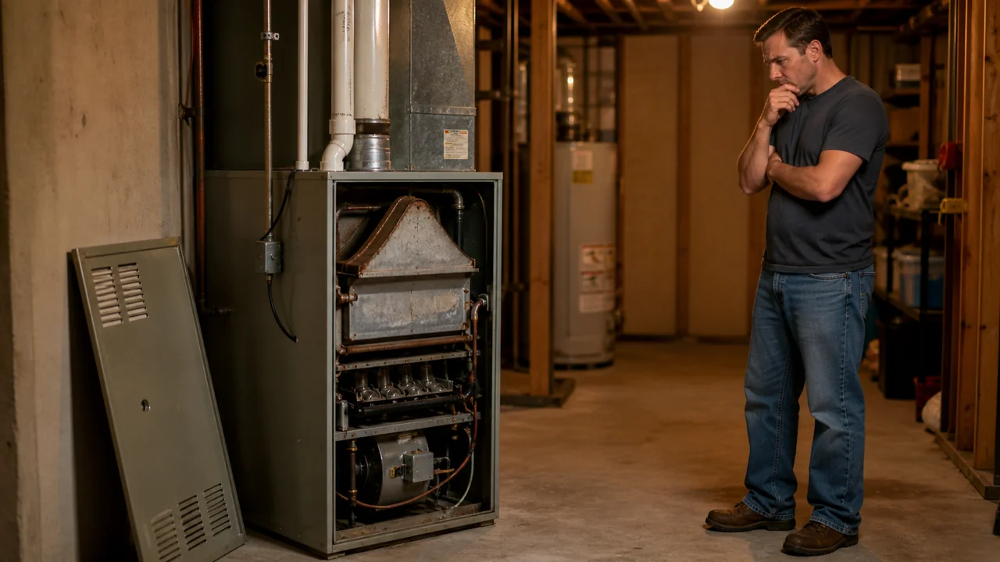

Advertising Disclosure: This site may receive compensation for service connections made through this page. Content is editorially independent.
Most furnace failures fall into one of nine root causes: no power, dirty filter, ignitor failure, dirty flame sensor, gas valve issue, thermostat fault, pressure switch trip, blower motor problem, or cracked heat exchanger. Set the thermostat to OFF, replace the filter if it is dirty, and call a technician — gas, electrical, and combustion components are not safe homeowner repairs. Common 2026 repair costs range from $100 for an ignitor to $4,000 for a heat exchanger.
It is the coldest week of the year and your furnace just stopped working. The house is dropping a degree every hour and you need an answer in the next ten minutes. The real questions: does a technician need to come tonight, or can it wait until morning? Is it safe to keep restarting it? And what is this going to cost?
This guide answers all three — every common failure mode, what is safe to DIY, what is not, and realistic 2026 repair pricing pulled directly from our complete HVAC Cost Guide so no technician can talk you into a bad deal.
Furnaces involve a gas valve, a combustion chamber over 1,000°F, a heat exchanger that separates flue gases from breathing air, and 120-volt electrical components. If you smell gas, leave the house and call your gas utility from outside. If a CO detector is sounding, get everyone out and call 911. Otherwise, set the thermostat to OFF and call a qualified HVAC technician. Do not open the cabinet, flip the breaker (the technician will kill the breaker on arrival), press reset more than once, relight a pilot, or operate the gas valve. No diagnosis is worth CO exposure or injury.
Universal First Step: Stay Safe Before You Diagnose
Before you do anything else, run through this 60-second safety check:
- Smell the air around the furnace. If you smell gas — sulfur or rotten eggs — leave the house, do not flip switches, and call your gas utility from outside. Per CDC guidance, even a small unlit leak can ignite from a thermostat click.
- Check every CO detector. If any is sounding, evacuate and call 911. CO is colorless and odorless; a cracked heat exchanger can release lethal levels in minutes. Do not re-enter to shut anything off.
- Set the thermostat to OFF. Completely off, not just a lower setpoint — stops the system from cycling while you wait for the technician.
- Leave breakers, cabinet switch, and gas valve alone. The technician handles the power-down and gas-shutoff sequence on arrival. Flipping breakers blindly or operating the gas valve yourself can make a small problem dangerous.
Why this matters: a furnace cycling through a fault stresses the heat exchanger every additional cycle. A cracked heat exchanger costs $600 to $4,000 to repair — and on an older furnace, that quote often pushes you toward full replacement at $3,000 to $7,500. Don't let a $15 filter problem turn into thousands.
The 9 Most Common Furnace Failure Modes
Nearly every furnace service call falls into one of these nine categories. Your symptom tells you which branch to follow.
1. No Power — Furnace Will Not Turn On at All
Thermostat is blank or shows the heat call but nothing happens at the furnace. Safe homeowner check: replace the thermostat batteries. Everything else — cabinet power switch, breaker, door safety switch, low-voltage transformer, control board — is a technician task. For the blank-thermostat scenario specifically, see why a blank thermostat means your system will not start.
2. Dirty Filter Restricting Return Airflow
A clogged filter is the #1 preventable cause of furnace problems. Restricted airflow overheats the heat exchanger, the high-limit switch trips, and the burners shut down — but the blower keeps running, so you feel cold air at the vents. See why a furnace blows cold air. Replace the filter every 30 to 90 days. A $15 filter prevents thousand-dollar repairs.
3. Ignitor Failure — Burners Will Not Light
Modern furnaces use a hot-surface ignitor that heats to ~2,000°F. After 5 to 10 years, the ceramic element cracks or burns out. Symptom: inducer motor and gas valve cycle, but burners never light. Ignitor replacement runs $100 to $300. Always a technician repair — the ignitor is fragile, and incorrect installation can cause delayed ignition that cracks the heat exchanger.
4. Dirty Flame Sensor — Furnace Lights Then Shuts Off
The flame sensor is a metal rod that confirms burners are burning. Oxidation prevents flame detection, so the gas valve shuts off 5 to 10 seconds after ignition. Symptom: burners light, run briefly, then shut off — short-cycling. Cleaning is included in annual tune-ups; mid-season failures need a technician (see furnace ignition failure).
5. Gas Valve Issue — Inducer Runs but No Flame
The inducer runs, the ignitor glows, but the gas valve never opens. Causes: failed solenoid, closed manual shutoff upstream, low utility gas pressure, or a control board not sending the open signal. Replacement runs $200 to $600. Never operate the gas valve yourself — it is federally regulated equipment that requires a technician to test and verify combustion safety.
6. Thermostat Malfunction
If the thermostat loses power or falls out of communication, nothing else matters. Common issues: dead batteries (the only safe check), tripped breaker, loose low-voltage wire behind the plate, or a smart-thermostat firmware glitch. If new batteries do not bring it back, call a technician — low-voltage wiring requires diagnosis at the furnace control board, not the thermostat.
7. Pressure Switch Trip — Inducer Runs but System Locks Out
The pressure switch confirms the inducer is pulling combustion air before the gas valve opens. If draft is wrong, it locks ignition out. Causes: blocked flue or intake pipe (snow, leaves, animal nest), water in the condensate trap, torn rubber tubing, or a failed switch. Walk outside and confirm flue and intake are clear. The trap, tubing, or switch itself are technician repairs.
8. Blower Motor Problem — No Air or Constant Run
Burners light correctly but no warm air reaches the vents, or the blower runs constantly. Causes: failed blower motor capacitor, worn bearing, stripped blower belt (older systems), or a control-board fault. Draft inducer motor replacement runs $200 to $700; main blower motor is similar. Both are technician repairs — the assembly sits inside the cabinet next to live electrical components.
9. Cracked Heat Exchanger — Safety Lockout or CO Detector
The heat exchanger separates combustion gases from breathing air. When it cracks — from age, overheating, or thermal stress — carbon monoxide can leak into the supply air. If your CO detector sounds when the furnace runs, evacuate and call 911 from outside. Repair runs $600 to $4,000; on a furnace older than 12 years, this almost always favors replacement. See our carbon monoxide safety guide.
Get connected with a technician in your ZIP code.
Call Now — (844) 582-1795Disclosure: We are a referral service and may receive compensation for qualified calls. Calls may be routed to an independent provider network and may be recorded. Pricing and availability vary by provider and location.
What You Can Safely Check Yourself
Five items, full stop. Anything else — gas, electrical, combustion components, the cabinet interior — is a technician task, even if a YouTube video makes it look easy:
- Replace the air filter. A severely clogged filter is the single most common preventable cause of furnace shutdowns. Hold the old filter up to a light — if you cannot see light through it, replace it. Through the heating season, check it monthly.
- Set the thermostat to OFF and confirm settings. Mode is HEAT (not COOL or OFF), the setpoint is at least 3 degrees above room temperature, the fan is on AUTO (not ON — fan ON runs the blower constantly and feels like cold air during burner-off cycles), and the batteries are fresh. Smart thermostats may be in a compressor delay after a power interruption — wait 5 to 10 minutes.
- Move physical debris away from the outdoor intake and exhaust pipes. If you have a high-efficiency condensing furnace, two PVC pipes vent through the wall to the outside. Snow drifts, leaves, or animal nests blocking either pipe will trip the pressure switch and lock the furnace out. Clear the area without touching the pipe itself.
- Flush the condensate drain line with white vinegar. High-efficiency condensing furnaces produce acidic condensate that drains through a PVC line. Algae and sediment clog the line and force water back into the furnace. Find the cleanout cap (usually a T-fitting on the drain line near the furnace), pour in one cup of distilled white vinegar, and let it sit for an hour to clear the line.
- Call a qualified HVAC technician. For everything else.
That is the complete safe DIY list. Anything else — opening the cabinet, touching the gas valve, testing the flame sensor, repeated reset presses, relighting a pilot, or heat-exchanger work — is a technician task. Refrigerant work elsewhere in the home is regulated under EPA Section 608 and certification is legally required to handle it. When in doubt, call.
When to Stop Troubleshooting and Call a Pro Immediately
Stop and call a professional when any of the following are true. Several of these are life-safety emergencies — call 911 or your gas utility before anything else:
- You smell gas — leave the house and call the gas utility from outside
- A CO detector is sounding — evacuate and call 911
- You smell burning plastic or rubber — electrical failure in progress, set thermostat to OFF
- You hear banging or booming during ignition — delayed ignition that can crack the heat exchanger
- The furnace short-cycles for more than two cycles — see our guide on why a furnace blows cold air for diagnosis
- You see water around the furnace — drain backup or condensate failure
- The breaker has tripped on the furnace circuit — never reset more than once
- The furnace is older than 15 years and short-cycling or losing capacity — age-driven failures compound
- You have replaced the filter and checked the thermostat and the problem persists
- Outside temperatures are below freezing and the home is dropping faster than 1 degree per hour — frozen pipes are a $5,000+ secondary risk
The diagnostic fee for a service call typically runs $65 to $150 per our cost guide. Most technicians waive or credit it against the repair if you approve the work. That is cheap insurance against either misdiagnosing the problem yourself or making it worse. For deep-cold weather, see our winter storm HVAC protection guide — frozen pipes from a 24-hour furnace outage often cost more than the furnace repair itself.
What a Technician Does on Arrival
Knowing what the technician checks helps you separate a thorough diagnosis from a hurried upsell. A competent technician kills the breaker before opening any panel — non-negotiable. Then:
- Visual inspection. Cabinet, flue, intake, and drain — looking for soot, corrosion, water, or frayed wiring.
- Multimeter reading at the control board. Confirms 24V from the transformer and checks call signals when the thermostat calls for heat.
- Manometer on gas pressure. Inlet ~7" water column for natural gas, manifold 3.5" WC. Out-of-spec points to gas valve or utility-side issues.
- Flame sensor cleaning and microamp test. The technician's multimeter reads flame current — healthy is 2 to 6 microamps. Below 1 microamp means the sensor or flame is failing.
- Inducer and blower amperage. Actual draw vs nameplate rating. High draw means a failing motor or capacitor.
- Heat exchanger borescope. Camera in the burner compartment looking for cracks, soot patterns, or thermal-stress damage. The diagnosis that decides repair vs. replace.
- CO measurement at the supply register. A combustion analyzer confirms the heat exchanger seals combustion gases away from breathing air. Above 9 ppm is a flag.
- Supply-vs-return temperature rise. A properly operating furnace produces a 40 to 70-degree rise. Outside that range points to airflow or combustion issues.
A technician who skips steps and jumps to a big-ticket recommendation ("you need a new heat exchanger") without showing readings is a flag. Ask to see the manometer reading, microamps, borescope photos, or CO measurement. A thorough technician shows their work.
What Furnace Repairs Cost in 2026
Before a technician quotes you, here is the honest 2026 reality check. These figures come straight from our complete HVAC Cost Guide — the single source of truth for pricing on this site, so there is no drift between articles:
- Diagnostic / service call fee: $65–$150 (often credited against the repair)
- Ignitor replacement: $100–$300
- Flame sensor cleaning: $90–$200 (usually included in annual tune-up)
- Gas valve replacement: $200–$600
- Draft inducer motor replacement: $200–$700
- Control board replacement: $300–$900
- Heat exchanger repair: $600–$4,000
- Emergency / after-hours surcharge: $100–$300 added to the base price
- Full furnace replacement (standard gas): $3,000–$7,500 installed
Estimated ranges based on publicly available industry data. Actual costs vary by region, provider, and system age.
If you are evaluating a quote right now, go straight to the full 2026 HVAC Cost Guide article — it breaks down every repair line, shows regional price variation, and flags add-on items technicians sometimes include that you can ask to remove. For replacements that exceed your repair budget, see HVAC financing options and the repair-versus-replace decision framework.
Climate Matters: Cold-Zone Furnace Failures Are Different
The same furnace symptom has different likely causes depending on where you live. A technician in Buffalo sees different failure patterns than one in Charleston or Missoula, and that changes how you should prioritize your diagnostics.
Cold-humid climates (Buffalo, Pittsburgh, Cleveland, Great Lakes): Furnaces run nearly continuously October through April. Heat exchangers fail earlier from thermal cycling. Condensate drain lines freeze in unconditioned crawl spaces. Snow drifts block intake and exhaust pipes. Schedule the annual tune-up in September. Browse providers in Pittsburgh or our New York and Pennsylvania hubs.
Cold-dry / mountain climates (Missoula, Salt Lake City, Cheyenne): Altitude reduces gas pressure, requiring orifice adjustments some installers skip. Subzero overnight temperatures stress the heat exchanger. Pressure-switch trips are more common from thinned air. See the fall HVAC prep guide.
Mixed-humid climates (Charlotte, Nashville, upper South): Furnaces run only December through February at full load, then sit idle. Squirrel and bird nests in the flue are a common spring start-up problem. Flame sensors oxidize from long idle periods.
Browse local service providers in Omaha, the full New York state hub, or all service areas to find a technician familiar with your region's specific failure patterns.
How to Prevent Furnace Failures Before Next Winter
Most 3 a.m. January no-heat calls would have been prevented by one hour of fall maintenance. The short list:
- Replace the filter every 1 to 3 months. Highest-ROI maintenance step — a clogged filter overheats the heat exchanger over time.
- Schedule an annual fall tune-up. The technician cleans the flame sensor, tests amperage, measures gas pressure, borescopes the heat exchanger, and checks CO. A $150 tune-up prevents most $1,000+ winter failures.
- Test every CO detector. Replace batteries each fall; replace units every 5 to 7 years per EPA combustion-pollutants guidance.
- Clear flue and intake pipes. Critical after snow — drifts can block pipes within hours.
- Keep three feet of clearance around the furnace. No stored items leaning on the cabinet; no flammables within ten feet.
- Listen for new noises. A new squeal, click, or rumble is the furnace telling you something. Schedule the tune-up before it becomes a no-heat call.
For the full year-round maintenance playbook — seasonal tasks, filter schedules, inspection checklists — see our 12-month HVAC maintenance checklist and the fall HVAC prep guide.
Deep-Dive Guides for Specific Furnace Symptoms
This guide is the overview. Each symptom below has its own dedicated article:
- Furnace Blowing Cold Air? — the #1 winter complaint by five most likely causes
- Furnace Not Igniting? — ignitor and gas valve walkthrough
- Carbon Monoxide Safety — detector placement and annual inspection
- Winter Storm HVAC Protection — freeze prevention and frozen-pipe risk
- 7 Warning Signs of HVAC Failure — early symptoms before emergency calls
- 12-Month Maintenance Checklist — the seasonal calendar that prevents failures
- Repair vs. Replace Decision Guide — the $5,000 rule for major repair quotes
- 2026 HVAC Cost Guide — canonical pricing reference for every line item
Trusted Industry Sources
The guidance in this article is consistent with published recommendations from:
- U.S. Department of Energy — Furnaces and Boilers
- EPA — Combustion Pollutants and Indoor Air Quality
- CDC — About Carbon Monoxide
- ENERGY STAR — Clean Heating & Cooling Federal Tax Credits
Don't wait — get a technician dispatched to your area.
Call Now — (844) 582-1795Disclosure: We are a referral service and may receive compensation for qualified calls. Calls may be routed to an independent provider network and may be recorded. Pricing and availability vary by provider and location.
Frequently Asked Questions
The most common no-power causes are: a tripped breaker at the service panel, a power switch on the side of the furnace cabinet that has been bumped to OFF, dead thermostat batteries, or a furnace door safety switch that did not click in fully when the access panel was last replaced. The thermostat batteries are the only safe homeowner check. Everything else — the breaker, power switch, door switch, control board, or low-voltage transformer — is a technician task. Set the thermostat to OFF and call a technician.
Most cold-air complaints come from the blower running while the burners are not lit. Common causes: the thermostat is set to FAN ON instead of AUTO, the furnace is in a post-ignition cooling cycle (normal, lasts 1 to 3 minutes), the flame sensor is dirty and shutting the burners down for safety, the gas valve has not opened, or the high-limit switch has tripped from overheating due to a dirty filter. Replace the filter, then check the thermostat fan setting. If cold air persists, call a technician — flame sensor cleaning, gas valve diagnosis, and high-limit reset are all professional repairs.
This pattern is called short-cycling and almost always points to overheating, a flame sensor that is failing to prove flame, or a flue/intake blockage triggering the pressure switch. Causes include a clogged air filter restricting return airflow, a blocked outdoor intake or exhaust pipe (snow, leaves, or a bird nest), a dirty flame sensor, an oversized furnace, or a high-limit switch failing. Short-cycling stresses the heat exchanger and shortens furnace life. Replace the filter and confirm vents outside the home are clear. If the cycling continues, shut the system off and call a technician.
There is no universal reset button on most modern furnaces. The closest thing is the cabinet power switch (looks like a light switch, usually on the side of the furnace) — turn it OFF, wait 30 seconds, turn it back ON. Some older oil furnaces have a red reset button on the burner motor that should only be pressed once — repeated presses can flood the combustion chamber with oil and cause a fire on the next ignition. If the furnace will not start after one power cycle, do not keep trying. Set the thermostat to OFF and call a technician.
A hot-surface ignitor that glows orange but fails to light the burners points to one of three causes: the gas valve is not opening (electrical fault, bad valve, or a closed manual shutoff upstream), the gas pressure is too low to ignite, or the ignitor itself is degraded and not reaching ignition temperature even though it appears to glow. Ignitor replacement runs $100 to $300 per costs.html. Gas valve replacement runs $200 to $600. Both are technician repairs — never attempt to bypass either component.
A burning-plastic smell from a furnace means an electrical component is overheating — wiring, a motor winding, the control board, or a melting capacitor. This is an active fire risk. Set the thermostat to OFF immediately, do not flip breakers (the technician will handle the power-down sequence on arrival), and call a technician. If the smell is strong or you see smoke, leave the home and call 911 or your gas utility before anyone else. Burning plastic is never normal — even on the first burn of the season after summer dust burns off, that smell is dust and metal, not plastic.
No. The flame sensor sits inside the burner compartment behind a sealed access panel that requires removing screws and disconnecting wiring. Opening that panel exposes you to gas plumbing, 120-volt wiring, and sharp sheet-metal edges, and incorrect reassembly can cause gas leaks or carbon monoxide problems. Flame sensor cleaning is a 10-minute job for a technician and is included in most annual tune-ups. If short-cycling or no-heat symptoms point to a dirty flame sensor, schedule the tune-up rather than opening the cabinet.
A modern gas furnace typically lasts 15 to 20 years with proper maintenance. Heat exchanger life is the limiting factor — once the exchanger cracks, the furnace is unsafe regardless of age. Furnaces in cold-climate cities like Buffalo, Pittsburgh, or Omaha that run nearly continuously from October through April often reach the lower end of that range. Furnaces in mild-winter climates like Charleston can push past 20 years. After 15 years, repairs above $1,500 favor replacement rather than repair under the standard $5,000 rule.
A few clicks at the start of a heating cycle are normal — the gas valve clicks open, the ignitor clicks as it cycles, and the inducer motor relay clicks as it engages. Clicking that continues for more than 30 seconds without ignition, or rhythmic clicking from inside the furnace cabinet during operation, points to a failed control board relay, a sticking gas valve, or a starting capacitor on the blower or inducer motor. Persistent clicking without heat is a no-heat call to a technician — do not keep trying to start the system.
The pressure switch is a safety device that confirms the inducer motor is pulling air through the heat exchanger before the gas valve is allowed to open. If the switch does not sense the correct draft, it blocks ignition and prevents combustion gases from spilling back into the home. Common pressure-switch problems: blocked flue or intake pipe (snow, leaves, animal nest), water in the condensate trap of a high-efficiency furnace, a torn rubber tubing connection, or a failed switch itself. Pressure-switch faults present as no-heat with the inducer running but the burners never igniting. Always a technician repair.
A CO alarm during furnace operation is a life-safety emergency. Possible causes include a cracked heat exchanger leaking combustion gases into the supply air, a blocked or disconnected flue dumping exhaust into the home, or a failed combustion-air supply. Get everyone out of the house immediately, leave the doors open behind you, and call 911 or the gas utility from outside. Do not re-enter to shut anything off. Per the U.S. Centers for Disease Control, CO is colorless and odorless and exposure can become lethal within minutes at high concentrations. After the responders clear the home, do not run the furnace again until a technician inspects the heat exchanger and flue.
Short-cycling — burners igniting, running for 30 to 90 seconds, then shutting off — is the furnace protecting itself from a fault. The four most common causes: a dirty air filter restricting return airflow and tripping the high-limit switch, a dirty flame sensor failing to prove flame after a few seconds, an oversized furnace that satisfies the thermostat too fast, or a blocked intake or exhaust pipe tripping the pressure switch. Replace the filter and check vents outside the home. If short-cycling continues, call a technician — repeated short-cycles thermally stress the heat exchanger and shorten furnace life.
The rule of thumb: multiply the furnace's age by the repair estimate. If the result exceeds $5,000, replacement is usually the better value. A 17-year-old furnace with a $400 ignitor replacement (17 × 400 = 6,800) favors replacement once you factor in the next 2 to 3 years of likely repairs. Cracked heat exchangers, repeated control-board failures, or any AFUE rating below 80 percent on a furnace older than 15 years all favor replacement. See our complete framework on the repair-versus-replace decision and the full HVAC cost guide before approving any major furnace repair.
Per the canonical cost guide, common 2026 furnace repair ranges are: ignitor replacement $100 to $300, flame sensor cleaning $90 to $200, gas valve replacement $200 to $600, draft inducer motor $200 to $700, control board $300 to $900, and heat exchanger repair $600 to $4,000. The diagnostic service call itself runs $65 to $150 and is often credited against the repair if you approve the work. After-hours or emergency calls add a $100 to $300 surcharge. Full furnace replacement runs $3,000 to $7,500 for a standard gas unit installed.
Yes — a severely clogged filter is one of the most common preventable causes of furnace problems. Restricted return airflow causes the heat exchanger to overheat, which trips the high-limit safety switch and shuts the burners down. The blower keeps running to cool the exchanger, so you feel cold air at the vents. Repeated trips can permanently damage the high-limit switch or crack the heat exchanger. Replace the filter every 30 to 90 days through the heating season. A $15 filter prevents repairs that can run into the thousands.
Water around a high-efficiency condensing furnace is usually a clogged condensate drain or a cracked condensate trap. Condensing furnaces produce roughly a gallon of acidic water per 100,000 BTUs of heat, drained out through a PVC line. When that line clogs (algae, sediment, or freezing in unconditioned spaces), water backs up and overflows the trap. Less commonly, water can come from a humidifier leak above the furnace, a clogged AC condensate drain, or condensation on cold flue pipes. Shut the furnace off, mop up standing water near electrical components, and call a technician.
Yes. Loud banging or booming during ignition (delayed ignition) means gas has accumulated and ignited all at once — repeated occurrences can crack the heat exchanger. Squealing usually means a worn blower motor bearing or a slipping inducer belt on older models. Grinding points to failing motor bearings. Whistling can mean a duct or filter restriction. Hissing near gas piping is a leak — leave the house and call the gas utility. In every case except routine startup clicks, set the thermostat to OFF and schedule a technician. Continuing to run a furnace through these noises turns repairs from hundreds of dollars into thousands.
The ignitor (usually a hot-surface ignitor in modern furnaces) is the component that lights the gas — it heats up to about 2,000°F to ignite the burner. The flame sensor is a separate metal rod that confirms the flame is actually burning. If the flame sensor does not detect flame within a few seconds of the gas valve opening, it shuts the gas off as a safety measure. A failed ignitor means no light and no flame at all. A dirty flame sensor means the burners light briefly, then shut off — short-cycling. They look similar but do opposite jobs.
Local HVAC Service Areas
Cool Call Pro connects homeowners with independent HVAC technicians nationwide. Find a pro in Buffalo (NY), Pittsburgh (PA), Omaha (NE), Missoula (MT), or Charleston (SC), or browse by state: New York, Pennsylvania, or all locations.